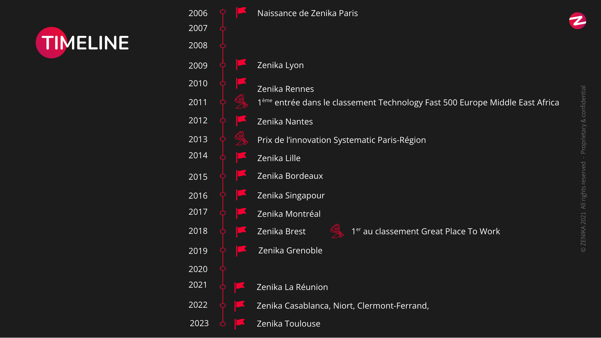

Introduction
Bonjour, aujourd'hui je vais vous présenter comment s'est déroulé mon stage au sein de l'entreprise Zenika.
Paul Groby
Classe 3°1
Bonjour, aujourd'hui je vais vous présenter comment s'est déroulé mon stage au sein de l'entreprise Zenika.
Zenika est une entreprise crée en 2006 par des passionnés de technologies qui souhaitaient fonder l’entreprise idéale, dans laquelle ils auraient rêvé de travailler quand ils étaient consultants.
Avec un effectif d’environ 500 collaborateurs à travers le monde, Zenika est une entreprise au modèle unique, qui concentre au sein de la même entité les métiers du Conseil, de la Formation et de la Réalisation appliqués aux technologies Open Source et à l’Agilité.
Cette triple compétence permet aux Consultants d’aborder véritablement les multiples facettes du métier d’Ingénieur tout en proposant la meilleure expertise technologique aux clients.
Le métier de développeur web est très vaste.
Il existe de nombreuses spécialisations, notamment :
Les journées des développeurs sont variées. Ils codent la majorité du temps.
En général le matin il y a une réunion qui revient tous les jours que l'on appelle le Daily.
L'après-midi est plus souvent consacré au développement, à la réflexion et à la concentration.
Il peut aussi y avoir des réunions en fin de journée.
J'ai pu voir 3 langages différents qui sont nécessaires pour développer un site web :

J'ai appris que dans le développement web, il faut être perséverant, curieux, créatif, logique, avoir l'envie d'apprendre et savoir bien raisonner.
J'ai trouvé ce métier passionnant et il m'a donné envie de l'apprendre encore plus.
Merci de m'avoir écouté. J'espère que ça vous a plu.
Avez-vous des questions ?
Site Web réalisé par Paul Groby